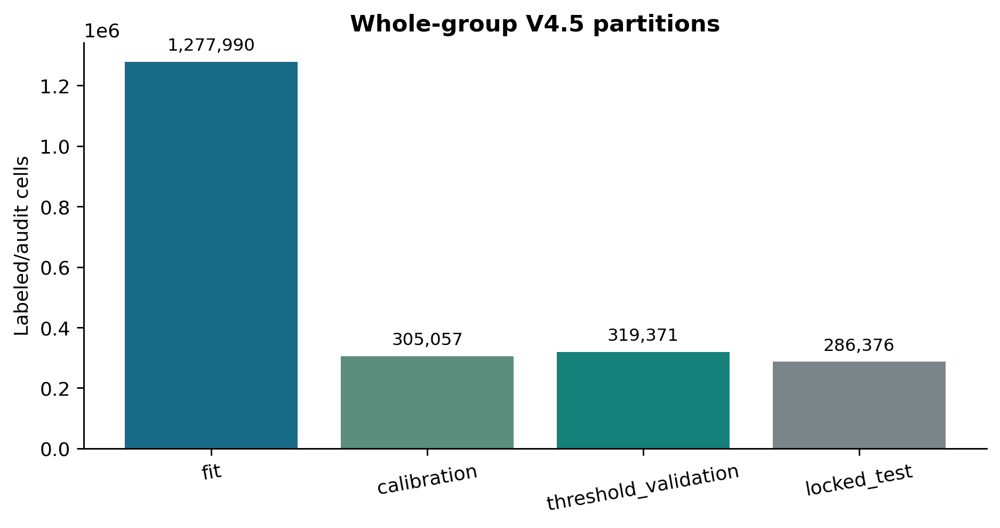
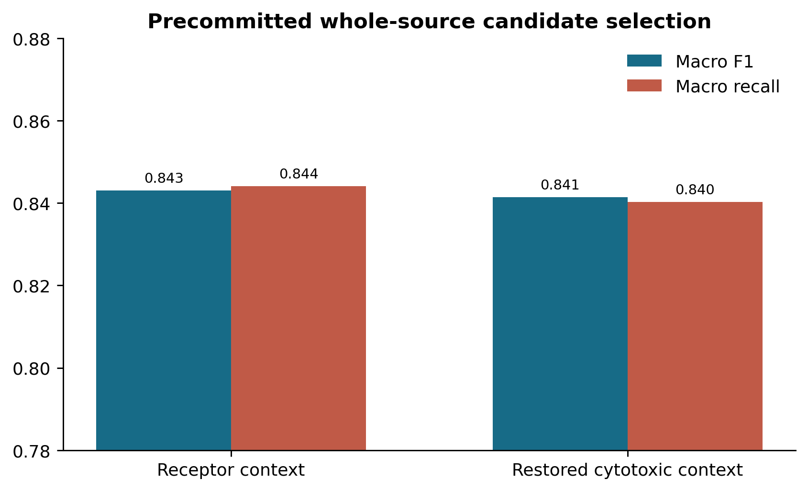
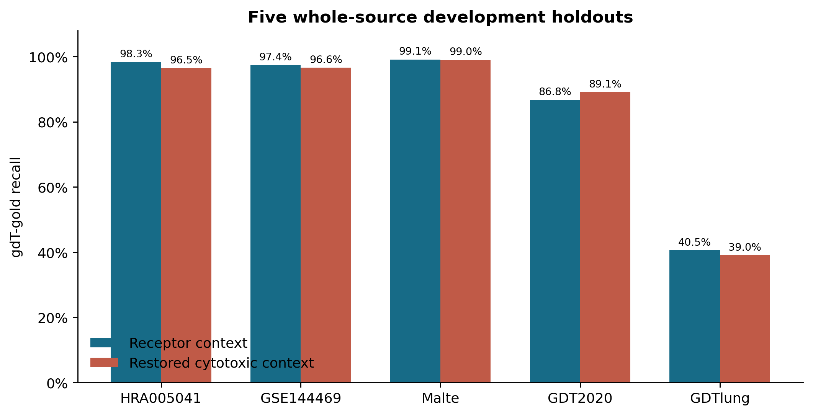
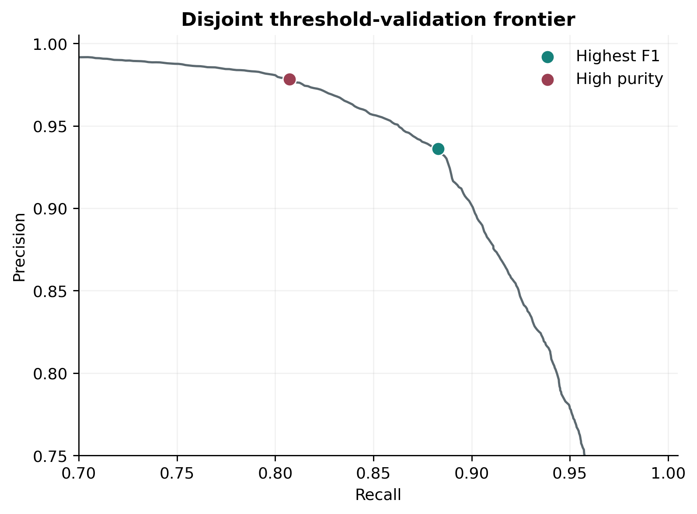
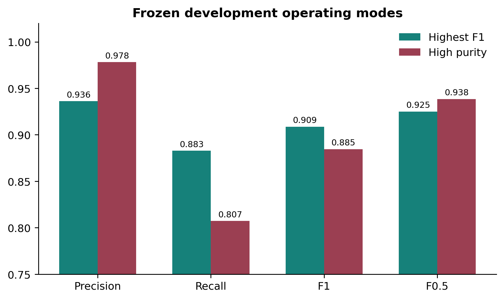
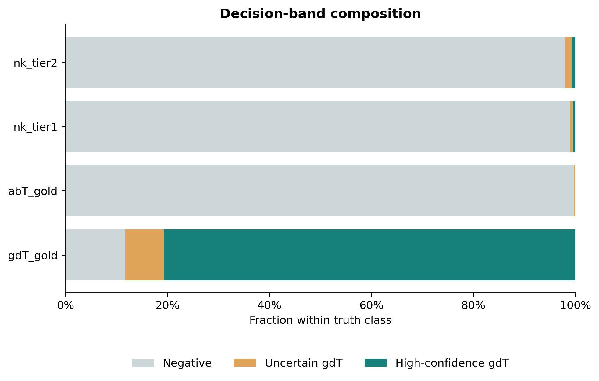

Executive decision
The selected candidate reached macro source-heldout F1 0.843 and macro recall 0.844. GDTlung recall remained only 40.5%, so broader positive training reduced but did not eliminate source dependence.
What V4.5 tested
Scientific changes
- Added sorted GDT2020 and GDTlung positives to development with source weights 0.60 and 0.35.
- Kept silver positives out of fitting, calibration, candidate selection, and thresholds.
- Compared 200-feature receptor context against a bounded cytotoxic-context alternative.
- Used curated tier-1 and tier-2 NK negatives; no single NK gene is a hard exclusion.
- Retained the frozen CD4/Treg rules and no hard TRDV-expression cutoff.
Critical validity boundary
GDT2020 and GDTlung came from the already-consumed common lockbox. They are now development data and can never again count as external validation. BALF and extension alpha-beta cohorts were not used by V4.5, but their previous inspection also means the project still needs a new final test.
Ground truth and partitions

| Partition | Positive source | gdT gold |
|---|---|---|
| calibration | GDTlung2023july_7p | 3,196 |
| calibration | GSE144469 | 587 |
| fit | GDT_2020AUG_woCOV | 16,959 |
| fit | GDTlung2023july_7p | 9,296 |
| fit | GSE144469 | 2,461 |
| fit | HRA005041 | 2,944 |
| fit | MalteGDT | 7,800 |
| locked_test | BALF_BLOOD_COPD | 852 |
| threshold_validation | GDT_2020AUG_woCOV | 8,945 |
| threshold_validation | GDTlung2023july_7p | 2,683 |
| threshold_validation | GSE144469 | 752 |
| threshold_validation | HRA005041 | 1,259 |
Feature ablation


| Candidate | Macro F1 | Macro recall | Minimum recall | Macro alpha-beta FPR | Selected |
|---|---|---|---|---|---|
| Receptor context | 0.8431 | 84.41% | 40.51% | 0.32% | 1 |
| Restored cytotoxic context | 0.8414 | 84.02% | 39.02% | 0.32% | 0 |
Whole-source failure modes
| Candidate | Held-out source | gdT recall | precision | f1 | alpha-beta FPR |
|---|---|---|---|---|---|
| Receptor context | HRA005041 | 98.31% | 58.30% | 0.7319 | 0.58% |
| Receptor context | GSE144469 | 97.37% | 99.09% | 0.9822 | 0.07% |
| Receptor context | MalteGDT | 99.09% | 100.00% | 0.9954 | - |
| Receptor context | GDT_2020AUG_woCOV | 86.76% | 100.00% | 0.9291 | - |
| Receptor context | GDTlung2023july_7p | 40.51% | 100.00% | 0.5767 | - |
| Restored cytotoxic context | HRA005041 | 96.48% | 59.01% | 0.7323 | 0.56% |
| Restored cytotoxic context | GSE144469 | 96.55% | 98.76% | 0.9764 | 0.09% |
| Restored cytotoxic context | MalteGDT | 98.97% | 100.00% | 0.9948 | - |
| Restored cytotoxic context | GDT_2020AUG_woCOV | 89.07% | 100.00% | 0.9422 | - |
| Restored cytotoxic context | GDTlung2023july_7p | 39.02% | 100.00% | 0.5614 | - |
HRA precision is lower because its held-out set contains 506,985 alpha-beta gold cells, whereas the three sorted-only held-out sources contain no negatives and therefore cannot estimate precision or FPR. The sorted-source F1 values should be read primarily as recall summaries.
Frozen operating modes


| Mode | threshold | precision | recall | f1 | F0.5 | specificity |
|---|---|---|---|---|---|---|
| highest_f1 | 0.8595 | 93.62% | 88.28% | 0.9087 | 0.9250 | 99.67% |
| high_purity | 0.9657 | 97.82% | 80.72% | 0.8846 | 0.9385 | 99.90% |
Uncertainty band

| Band | Truth | Cells | Within truth |
|---|---|---|---|
| high_confidence_gdt | abT_gold | 231 | 0.09% |
| high_confidence_gdt | gdT_gold | 11,010 | 80.72% |
| high_confidence_gdt | nk_tier1 | 14 | 0.49% |
| high_confidence_gdt | nk_tier2 | 100 | 0.74% |
| negative | abT_gold | 243,590 | 99.68% |
| negative | gdT_gold | 1,598 | 11.72% |
| negative | nk_tier1 | 2,830 | 98.95% |
| negative | nk_tier2 | 13,262 | 97.98% |
| uncertain_gdt | abT_gold | 560 | 0.23% |
| uncertain_gdt | gdT_gold | 1,031 | 7.56% |
| uncertain_gdt | nk_tier1 | 16 | 0.56% |
| uncertain_gdt | nk_tier2 | 174 | 1.29% |
The uncertainty interval contains 1,031 gdT-gold and 560 alpha-beta-gold validation cells. It supports conservative review workflows but does not repair low-scoring GDTlung positives below the highest-F1 threshold.
Interpretation
- The V4.3 threshold-transfer defect is addressed because each held-out model and the final deployment scorer are calibrated directly, and final thresholds are derived from that exact scorer.
- Positive-domain expansion markedly improves held-out HRA, GSE144469, Malte, and GDT2020 recall.
- The cytotoxic panel is not promoted: NK labels were sufficient to keep its FPR similar, but the added genes provided no reproducible macro-F1 gain.
- GDTlung remains the dominant domain failure, consistent with its known suboptimal library quality and weak receptor-expression transfer.
- V4.5 development-validation F1 is not directly comparable to V4.4's easier threshold partition because V4.5 adds difficult consumed sorted cohorts.
- Do not score the consumed common lockbox again for model selection. Promotion requires a new untouched positive plus alpha-beta/NK test.
Reproducibility and status
Training script: workflows/gdtai/train_gdtai_v4_5_development.py
Configuration: configs/models/gdtai/v4_5_positive_diversity_ablation.json
Model contract: Integrated_dataset/models/gdT_prediction/gdtai_v4_5_development/model_contract.json
Contract SHA-256: 974d0687de4a93688b4e0d665b276458c90f6f5a772615dbeea9cbb2f66072b2
Runtime: 149.7 seconds after exact vectorization of the unchanged Stage-1 threshold grid.